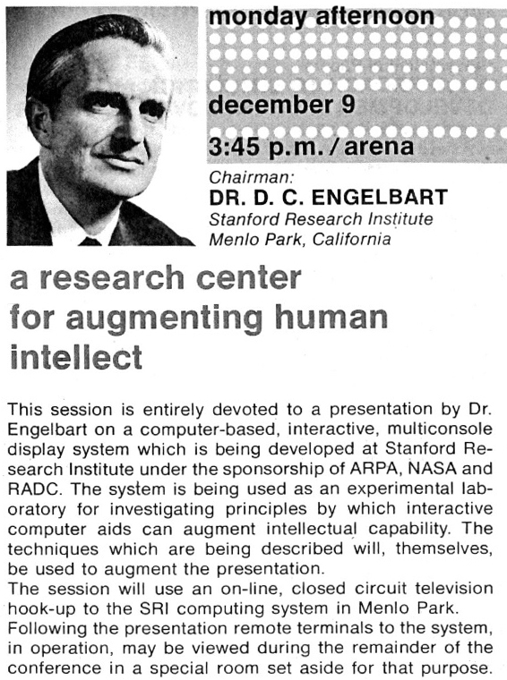
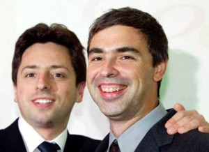

Perspectiva
“La perspectiva aporta 80 puntos al coeficiente intelectual”
– Alan Kay
Originalmente Alan Kay había decidido dedicarse a la biología, fue casi por accidente que terminó dedicándose a la computación. En una de sus charlas hace unos años atrás Kay confesaba que si quisiera volver al campo de la microbiología le tomaría mucho tiempo ponerse al día, dado los increible avances que ha tenido esa disciplina en esto años. Sin embargo, opina él, no pasa lo mismo con las ciencias de la computación, las que le parecen que se encuentran estancadas.
“Mucho de lo que está mal en nuestro campo es que muchas de las ideas que surgieron antes de 1975 aún son el paradigma actual.”
Y Alan Kay lo viene diciendo hace rato, este video de 1997 en la OOPSLA muestra lo que se podía hacer con computadores en 1972 (la demo aparece a los 3 minutos 40 segundos):

El mouse, una de las grandes innovaciones de la década del 80, fue originalmente presentado por Douglas Engelbart en La Madre de Todas las Demos, en 1968. En esa mítica demostración, aparte del mouse, se mostró por primara vez el uso de las redes de datos, la tele conferencia (con video), el correo electrónico, el hipertexto, la edición colaborativa en tiempo real de texto (¿alguien mencionó Google Buzz Wave?).
Toda la inspiración para el trabajo de Engelbart venía del artículo de Vannevar Bush “As We May Think”, de 1945. Muchos de ustedes seguramente no lo han leido, aquí está.
En ese largo artículo aparece el concepto de Memex, un dispositivo que anticipa la idea de nuestros computadores usando hipertexto para navegar en la información, conceptos que fueron los fundamentos de la World Wide Web de Tim Berners Lee.
En 1992 Michael Buckland critica la visión de Vannevar Bush, por considerarla incompleta y no entender “la ciencia de la información”, al tener una mala opinión de los indices y esquemas de clasificación: “Bush piensa que la creación de asociaciones arbitrarias entre registros individuales era la base de la memoria, así que quería 'mem(oria)-ex' o 'Memex' en vez de Index (indice). El resultado era un diseño personalizado, pero contraproducente.”

Si miran los primeros esfuerzos de clasificar la información de la web, todos persistían en la idea de que había que indexar la información, parecía como que nadie consideraba el valor intrínseco de los hiperenlaces, que preconizaba Vannevar Bush. Buckland había logrado imponer “la visión correcta de la ciencia de la información”.
La revolución en la búsqueda, la verdadera innovación de esa época, vino del trabajo de Larry Page y Sergei Brin, con su concepto de PageRank, que valora intrinsecamente las ideas de Vannebar Bush, y desafía el convencionalismo de la “ciencia de la información” de Buckland.Page y Brin adoptaron una perspectiva distinta a sus competidores y con eso triunfaron.
Los grandes avances en informática han venido de esa manera. Pero el resto, sólo siguen mejorando y optimizando problemas ya resueltos. Pocos informáticos se preocupan de estudiar su pasado y vuelven a repetir una y otra vez los errores, o simplemente vuelven a crear la rueda.
Seguimos estancándonos, una vez que damos un pequeño paso, nos quedamos en un loop de micro optimizaciones, sin dar saltos cuantitavos importantes, eso es lo que reclama Alan Kay, y en gran parte tiene razón.
Hoy en día tenemos muchos “Bucklands”, sobretodo en la academia, que nos dicen que este, o aquel es el paradigma correcto, y cancelan todo intento de abordar los problemas desde otra perspectiva.
Todo avance tiene que romper con lo establecido. Es necesario mirar hacia atrás, entender y asumir lo que se nos ha legado. Salir de los estrechos senderos que nuestros maestros nos han trazado. En definitiva, asumir siempre nuevas perspectivas, para recién estar en condiciones de innovar.